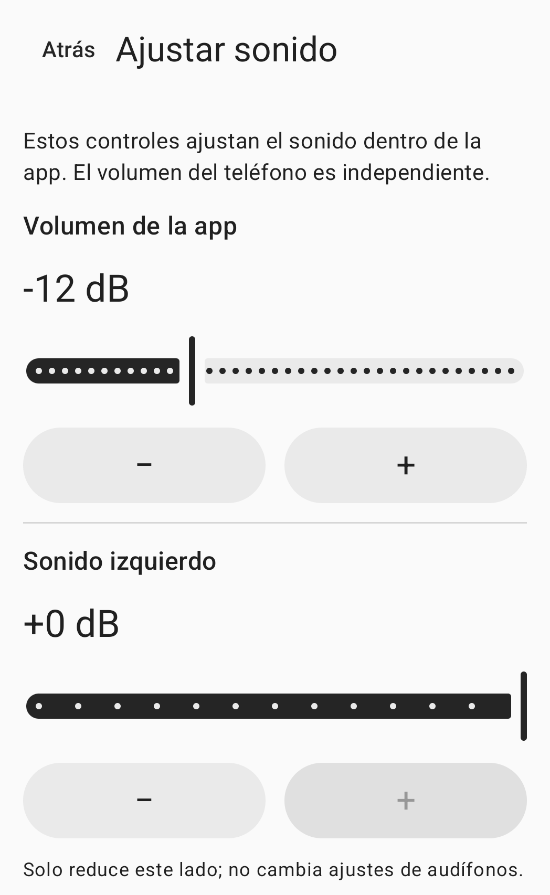

Control manual del sonido ambiente
Sonido cercano.Tú lo ajustas.
El sonido del micrófono del teléfono,en los auriculares que elijas.Ajusta el nivel, cada lado y el tono.
Ver cómo usarlaAún no se ha lanzado al público.

Cómo usarla
Conecta, ajusta y empieza.
Conecta
Conecta los auriculares a este teléfono y elige la salida en la app. El modo predeterminado es por cable o USB. Para usar Bluetooth, activa el modo experimental y selecciona tú la salida conectada.
Ajusta
Ajusta el nivel de la app, cada lado y el tono. El volumen multimedia del teléfono se configura por separado. Ponte los auriculares y prepárate con un volumen bajo.
Empieza
Permite el acceso al micrófono, lee el aviso de sesión y pulsa el botón de consentimiento e inicio. Dar permiso no activa el micrófono por sí solo. Puedes detener la sesión desde la app o su notificación.
Ajustes de sonido
Elige tú los ajustes.
Los ajustes de la app y el volumen multimedia del teléfono son independientes.
Nivel de la app
Ajusta en la app el nivel enviado a los auriculares elegidos. Comprueba también el volumen multimedia del teléfono.
Izquierda y derecha
Reduce el nivel de cada lado por separado. Estos controles no cambian los ajustes propios de los auriculares ni de un audífono.
Tono
Ajusta el tono manualmente. La app no compensa el sonido automáticamente a partir de una prueba auditiva.
La imagen superior es un recorte de la pantalla real de ajustes de sonido. Los controles del lado derecho y del tono no aparecen en el recorte.
Preguntas frecuentes
Antes de empezar
¿Puedo usar auriculares Bluetooth?
Bluetooth es experimental. Conecta los auriculares a este teléfono, activa el modo experimental y selecciona tú la salida. El retardo y la calidad de sonido dependen del teléfono y de los auriculares.
¿La sesión se reinicia al reconectar los auriculares?
No. Si se pierde la ruta de audio, el foco de audio o el permiso del micrófono, la sesión termina. Reconectar los auriculares o volver a abrir la app no la reinicia. Iníciala tú cuando estés listo.
¿Y si mis auriculares no aparecen en la lista?
Comprueba la conexión de audio multimedia Bluetooth de este teléfono y actualiza la lista de salidas. Encontrarás más ayuda en la página de soporte.
¿Cómo elimino las grabaciones o los datos de la app?
La app no crea archivos de grabación del micrófono. Consulta la guía de datos locales para eliminar los ajustes de sonido, el historial de solicitudes de permisos o el registro opcional de la última prueba.
Revisa esta información antes de usarla.
Para personas adultas de 18 años o más con audición normal, HearAssist es una herramienta de control manual del sonido ambiente. No está destinada a compensar pérdidas auditivas, sustituir audífonos, evaluar la audición, diagnosticar ni tratar enfermedades.
No se han verificado la claridad del habla, la latencia real ni la seguridad acústica. No se garantiza la eliminación total del ruido ni una latencia nula.
La app aún no se ha publicado en las tiendas. Este sitio ofrece información del producto y soporte.